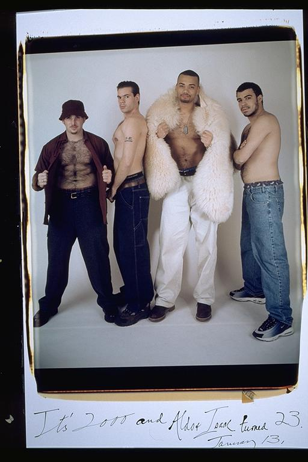

Aldo: And of course, the tough guy pictures. We all wanted to have a picture of ourselves bare-chested, so we could admire ourselves. They actually turned out to be really funny photos. We had a really good time, flexing and posing in the mirror, to get prepared for this shot.
Eugene: "Bare Chested With Rug" -- Every time we stand in front of the camera we always decide how to make this picture different from the ones before it. Isaac always likes to show off his body, so he recommended taking off our shirts. I was a little insecure about my physique. I quickly thought how can I be funny, yet smooth. Since I didn't have a mink, I used the rug.
Isaac: I must say, I look pretty damn hirsute in this one. A bit squat too. Bad camera angle. Abs not too bad, though. Aldo and Eugene look like they belong in Playgirl. Casey too, if he didn't have the gut (Just being honest here, folks). This is one of those times it would have been nice if one of us had said: "You know, I don't think that sounds like such a good idea." Alas...
